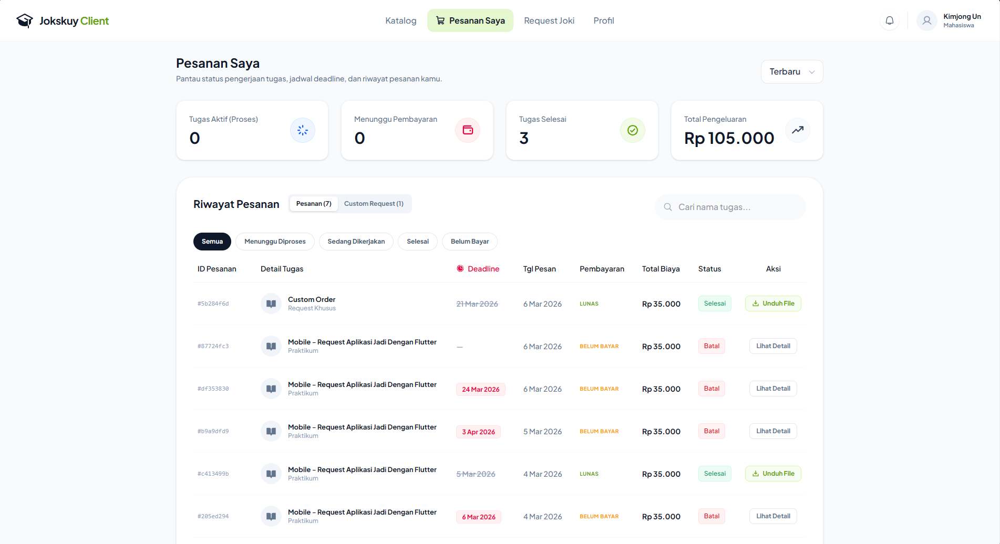

An educational service operation was managing client orders through scattered WhatsApp chats, manual Google Sheets, and verbal coordination. This created bottlenecks: lost orders, unclear payment status, and no way to track delivery progress.
Back to work

Jokskuy
FULL SYSTEMComplete client and order management platform for an educational service operation.

The Problem
What I Built
A complete management system handling the full lifecycle of service orders — from custom requests to final delivery tracking.
- ✓ Client-side: Submit custom service requests, real-time chat with operators, upload payment proof, track order status
- ✓ Operator-side: View and manage assigned orders, chat with clients, verify payments, update delivery status
- ✓ Admin-side: Full oversight dashboard, financial reporting, user management, order assignment
- ✓ Real-time chat between clients, operators, and admins with message history
- ✓ Payment proof verification workflow with admin approval
- ✓ Delivery tracking with status updates visible to all parties
The Result
A complete, production-ready system that replaces scattered WhatsApp coordination with a structured platform. All stakeholders — clients, operators, and admins — have clear visibility into every order’s status.
Built with React 19 + Vite for fast development, Supabase for real-time features and auth, and TanStack Query for efficient server state management.
Stack
React 19
Vite
Supabase (Auth + DB + Realtime)
TanStack Query
Tailwind CSS
Multi-role Architecture
Butuh sistem manajemen order atau platform multi-user?
Discuss your project on WhatsApp